Pico
La fuerza más alta del tirón.
Chand convierte tu sensor de fuerza Bluetooth en un laboratorio de fuerza de dedos para escalar, en tu iPhone.
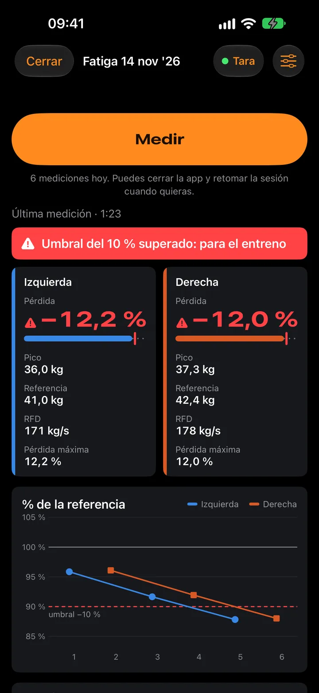
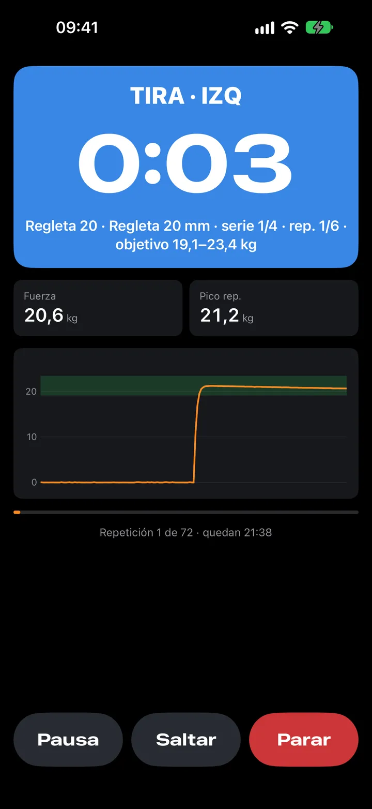
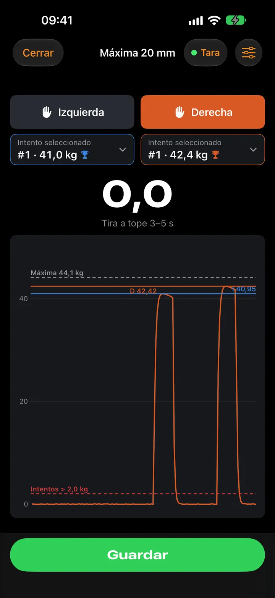
Fatiga
Entre bloque y bloque, un tirón de control de pocos segundos. Chand lo compara con tu referencia y te enseña lo que has perdido, para que decidas cuándo parar.
Con este umbralPara en el tirón 4
Cada barra es un tirón de control. La línea de puntos de arriba es tu referencia; cuando un tirón queda por debajo del umbral, toca parar. Mueve el umbral para verlo.
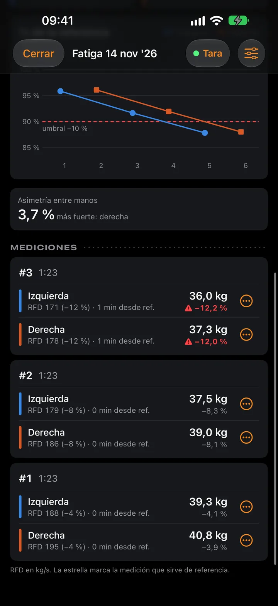
Medir
Fuerza máxima, RFD, resistencia y fuerza crítica. Cada mano por separado o las dos a la vez, con todos los intentos guardados.
El pico es el punto más alto de la curva. El RFD es lo rápido que llegas: la pendiente entre el 20 % y el 80 % del pico.
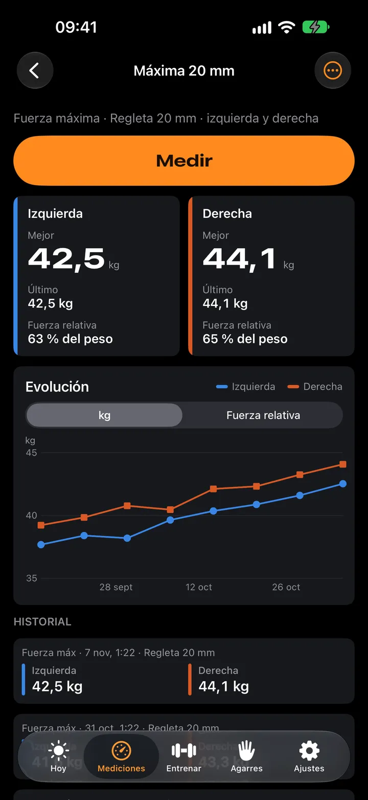
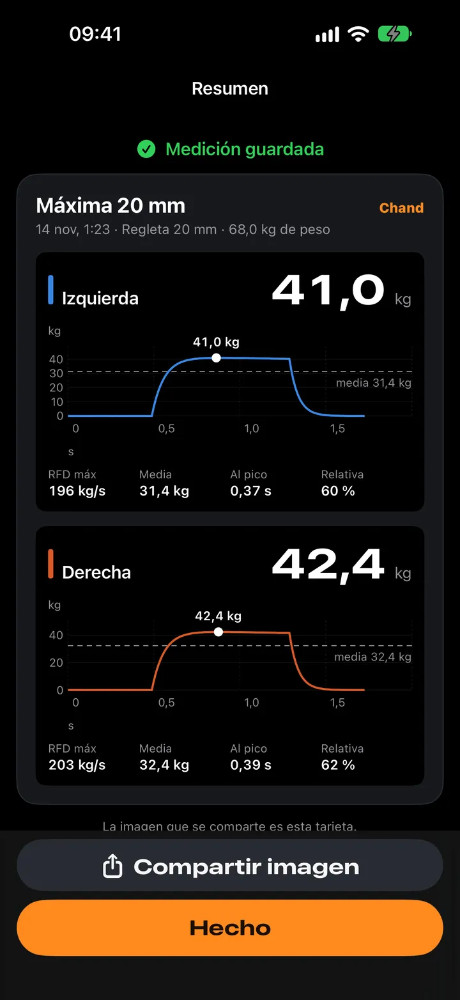
La fuerza más alta del tirón.
Velocidad de desarrollo de la fuerza: kilos por segundo en el arranque del tirón.
Lo que falta para llegar a la referencia: 100 − valor ÷ referencia × 100.
La diferencia entre tu mano fuerte y la débil, respecto a la fuerte.
24 repeticiones de 7 s con 3 s de descanso. La media de las seis últimas es tu fuerza crítica (CF): lo que puedes sostener. Lo que pones por encima es tu reserva (W′).
Entrenar
Series con repeticiones, trabajo y descanso. La zona objetivo va en kilos o en porcentaje de tu máxima, y la repetición empieza cuando tiras.
Seis repeticiones de 7 s con 3 s de descanso. La banda es la zona objetivo: el 65–75 % de tu máxima con ese agarre.
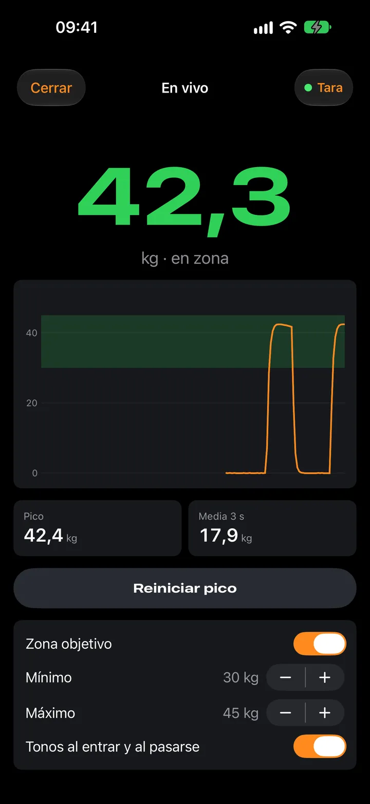
Temas
Del negro puro que se lee con magnesio en la pantalla al fondo claro para salas con mucha luz.
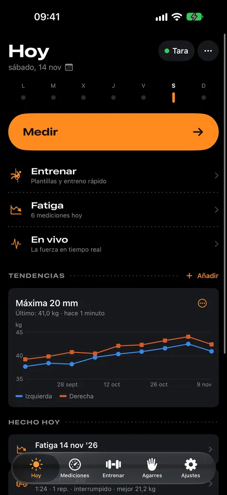
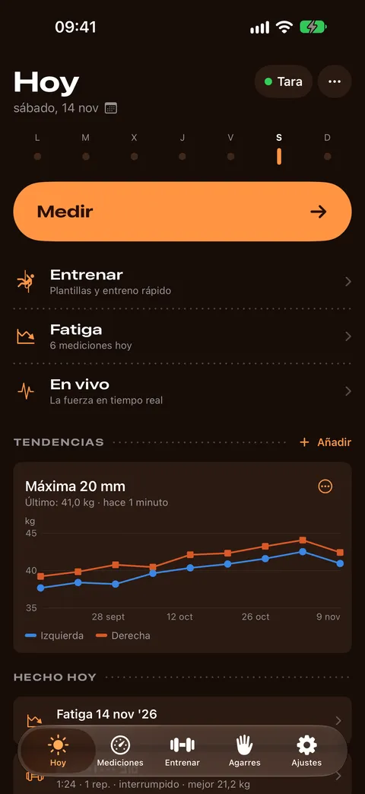
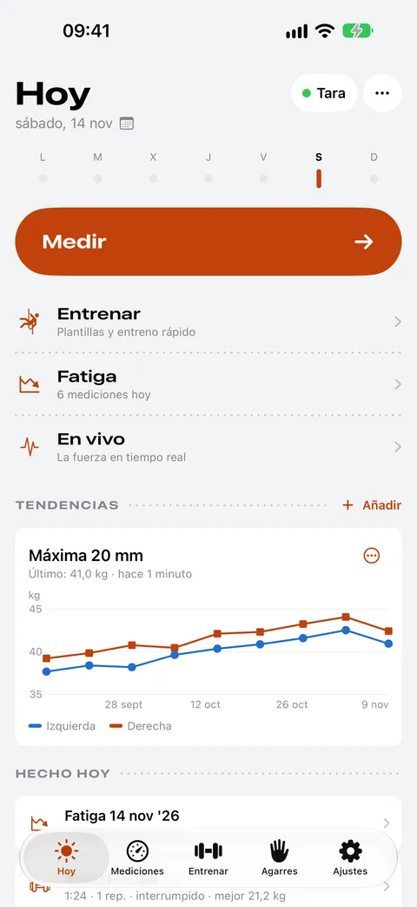
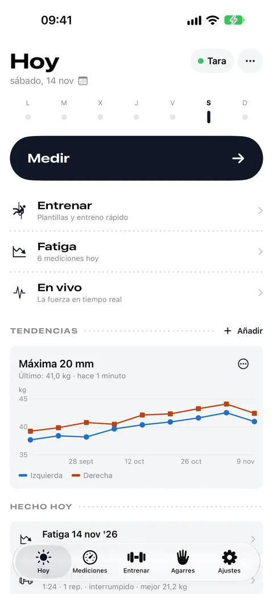
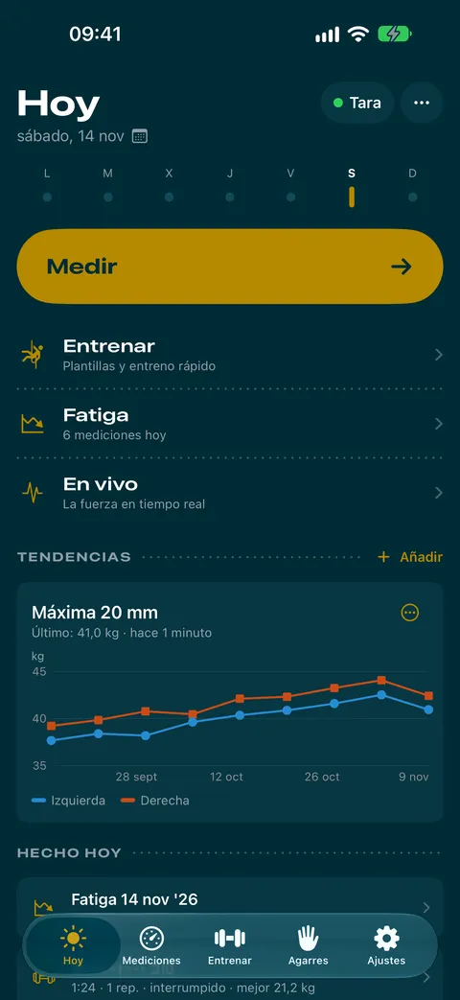
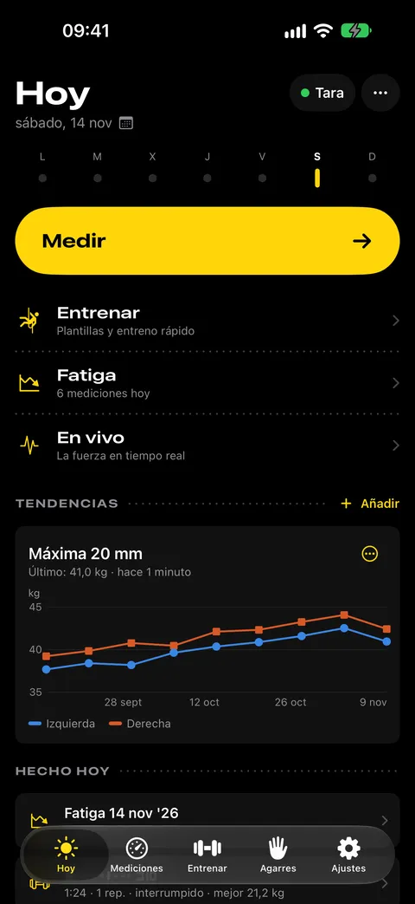
Privacidad
Chand no recoge ningún dato. Todo lo que registras se queda en tu dispositivo y solo lo exportas cuando tú lo decides.
Sin registro ni inicio de sesión.
Sin analítica ni componentes de terceros.
Ninguno, en ninguna parte de la app.
La app solo habla con el App Store, para la suscripción.
Requisitos
La descarga es gratuita. Conectar el sensor, la fuerza en vivo, tu historial y la exportación de tus datos son gratis. Medir, las sesiones de fatiga y los entrenos necesitan Chand Pro, una suscripción mensual con una semana de prueba gratuita.
Con iOS 26 o posterior.
Chand funciona con los sensores que usan el protocolo del Tindeq Progressor. Chand es una app independiente, sin relación con ningún fabricante de sensores ni respaldada por ellos.
El modo demo permite conocer la app sin sensor.